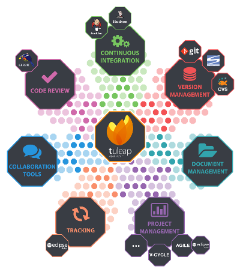
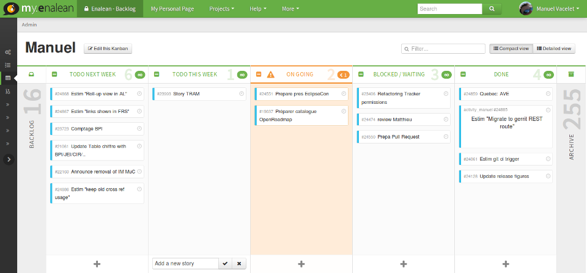

Votre projet Agile avec Tuleap
Du Kanban à la revue de code
Agile? pourquoi du Kanban et de la revue de code ?
Tuleap
- Boite à outils pour la gestion de projet logiciel
- Agile++, Cycle en V, ...
- Libre, GPL v2
- Evolue rapidement (1 livraison par mois)

Agile: Kanban

Gerrit Code Review
- Plate-forme web :
- Revue de code
- Gestion des dépôts Git
- Gestion des workflows Git
- Licence Libre (Apache 2.0)
- Évolue rapidement (3 versions par année)